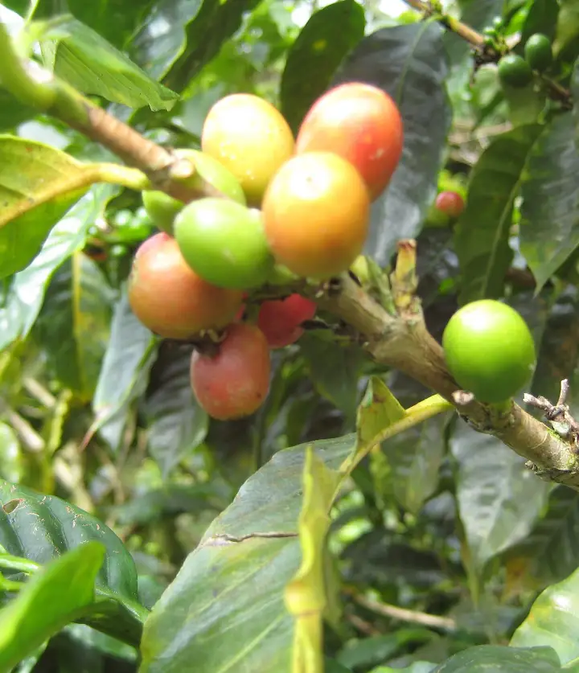
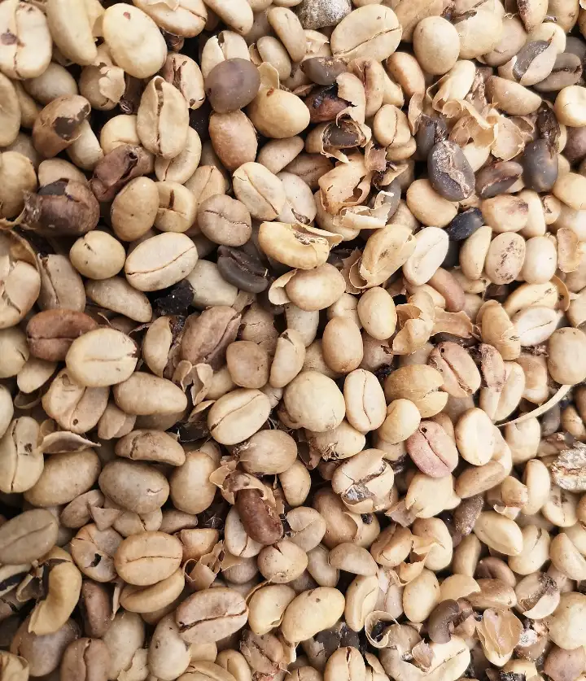
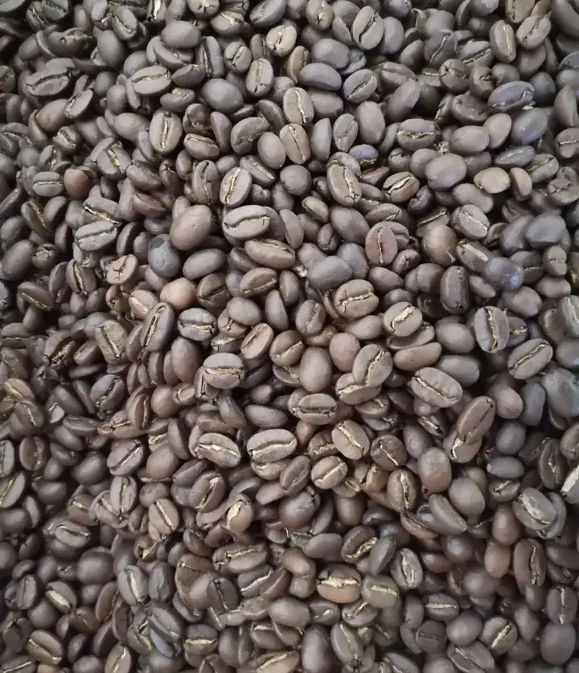
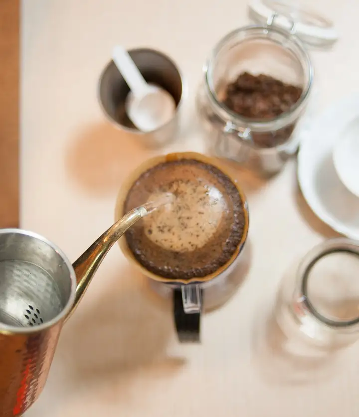

- المناسبة
- حفلة تخرج
- الموعد
- الخميس، بعد المغرب
- العدد
- ٢٥ شخصًا
- الفرع
- الفرع الرئيسي
- الميزانية
- حدود ٢٬٠٠٠ ريال
- المقترح
- باقة التخرج، ١٬٨٥٠ ريال
بانتظار اعتماد الموظف
لأصحاب الكافيهات
وكيل ذكي يستقبل استفسارات المناسبات والطلبات الكبيرة عبر واتساب، يعرض خياراتك المعتمدة، وينظّم التفاصيل ويتابعها مع فريقك حتى التأكيد.
بانتظار اعتماد الموظف
في القهوة المختصة كل مرحلة لها عناية. ولبّيه يعطي طلبات عملائك نفس العناية: من أول رسالة إلى التأكيد، وفريقك يتفرغ للضيافة.




مواقف شائعة عند الكافيهات اللي تستقبل طلبات مناسبات وبوكسات. فريقك مشغول بخدمة الموجودين، وهذا الصح؛ المشكلة إن الرسائل تنتظر.
كم باقة الحفلات؟ وش يشمل البوكس؟ والموظف يخدم الطابور، فالرسالة تنتظر.
الوكيل: يرد من باقاتك وأسعارك المعتمدة، ويبدأ جمع التفاصيل مباشرة.
عميل مهتم، لكن طلبه ناقص التاريخ أو العدد، وما أحد رجع له.
الوكيل: يسأل عن الناقص، ويتابع في التوقيت اللي تحدده أنت.
طلبات متوزعة بين الجوالات والموظفين والفروع، وصعب تعرف وش تأكد ووش معلق.
الوكيل: ملخص واحد لكل طلب يوصل للفريق، وتقرير لك بالمؤكد والمعلق.
كل رسالة من العميل تتحول إلى معلومة في بطاقة الطلب، والموظف يعتمد قبل أي تأكيد. مثال توضيحي؛ المحادثة والباقات والأسعار افتراضية.
الحالة استفسار جديد
هذا الملخص يوصل للفريق المسؤول، ويدخل في تقرير إدارة الكافيه.
أربع خطوات. عند كل خطوة مكتوب مين يتولاها، عشان تعرف وين دور الوكيل ووين قرار فريقك.
التاريخ والعدد والفرع والميزانية والتفضيلات، بأسئلة قصيرة. نراجع إعدادات حساب واتساب الخاص بنشاطك ونحدد طريقة الربط المناسبة قبل التشغيل.
الوكيلمن قائمتك المعتمدة فقط، ثم يرسل للعميل ملخصًا بالإجمالي ليوافق عليه.
الوكيل، من قائمتكيتحقق من جدول المقهى إذا كان مربوطًا، أو يرفع الطلب لموظفك. بعد الاعتماد يرسل رابط دفع المقهى إذا كان متاحًا.
الجدول أو فريقكيذكّر العميل بما ينقص حسب إعداداتك، يؤكد الطلب، ويجهز لفريقك ملخصًا واضحًا ولك تقريرًا بالمؤكد والمعلق.
الوكيل، لفريقك ولككل وظيفة في الوكيل مربوطة بنتيجة يحسها شخص محدد في نشاطك.
نسجل وضعكم الحالي قبل التشغيل، ونقارن عليه بعده. ما نعطيك أرقامًا مسبقة؛ النتيجة تبان من بياناتكم.
| مؤكدة | ٧ | |
|---|---|---|
| معتمدة، بانتظار الدفع | ٣ | |
| بانتظار اعتماد الموظف | ٢ | |
| تحتاج متابعة | ٤ |
أكثر طلب هالأسبوع: بوكسات الاجتماعات، الفرع الثاني.
هو واجهة مرتبة لاستقبال الطلبات، والقرار يبقى عندك وعند فريقك.
استلام المحادثة: أي موظف مخوّل يقدر يوقف الوكيل في محادثة معينة ويكمل بنفسه، ويشوف ملخص الطلب قدامه.
وإذا سؤالك مو هنا، اسألنا مباشرة.
نعم. الإعداد لفرع واحد أبسط، والفائدة الأساسية واحدة: رد مرتب على الاستفسارات، وتفاصيل مكتملة، ومتابعة للطلبات المهتمة.
يمكن إعداده ليسأل العميل عن الفرع المناسب، ويوجّه الطلب للفريق المسؤول عنه. طريقة التوزيع بين الفروع نحددها معك بعد مراجعة طريقة عملكم.
نعم. العميل يقدر يطلب موظفًا في أي وقت، والوكيل يحوّل تلقائيًا في الحالات اللي تحددها، مثل الطلبات الخاصة أو الكميات الكبيرة أو الشكاوى.
نراجع إعدادات حساب واتساب الخاص بنشاطك ونحدد طريقة الربط المناسبة قبل التشغيل.
يعتمد على النظام اللي تستخدمونه، ونحدده بعد المراجعة. وإذا ما كان الربط متاحًا، يرفع الوكيل الطلب للموظف ليتحقق من التوافر، ويرسل رابط الدفع الخاص بالمقهى بعد الاعتماد.
تركيزه على استفسارات المناسبات والبوكسات والطلبات الكبيرة. طريقة التعامل مع باقي الرسائل نتفق عليها معك.
قائمة الباقات والمنتجات والأسعار، الفروع وأوقاتها، سياسات العربون والإلغاء، اسم الموظف المسؤول عن الاعتماد، ورابط الدفع إن وجد. والباقي نرتبه معك.
أرسل لنا اسم الكافيه وأكثر طلب يجيكم، ونرتب معك عرضًا يوضح كيف يستقبل الوكيل طلباتكم بباقاتكم وأسعاركم.